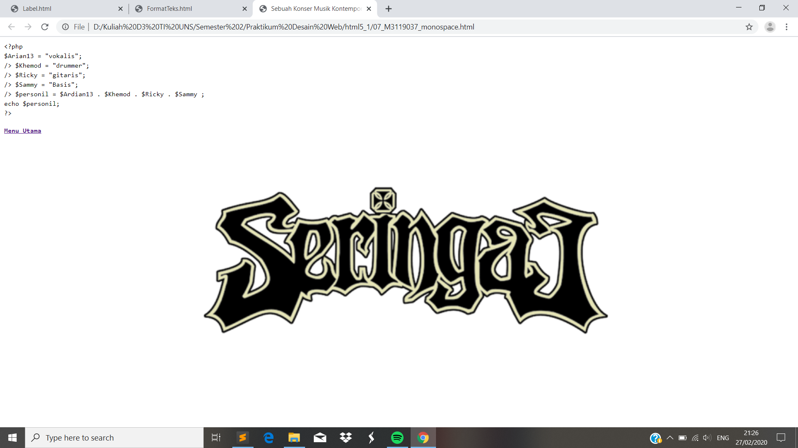

Format Teks
// Monospace merupakan code yang digunakan untuk menampilkan format font dalam web yang berbeda dari text biasa. Perintah yang digunakan yakni <code>
Codingan
<!DOCTYPE html>
<html>
<head>
<meta charset="UTF-8">
<title>Sebuah Konser Musik Kontemporer </title>
</head>
<body style ="background:url(seringai2.png); background-repeat: no-repeat; background-size: cover;">
<code>
&lt;?php<br />
$Arian13 = &quot;vokalis&quot;;<br> />
$Khemod = &quot;drummer&quot;;<br> />
$Ricky = &quot;gitaris&quot;;<br> />
$Sammy = &quot;Basis&quot;;<br> />
$personil = $Ardian13 . $Khemod . $Ricky . $Sammy ;<br />
echo $personil; <br />
?&gt;
<code>
Tampilan Hasil Percobaan

Kesimpulan
Pada percobaan monospace ini menghasilkan format font yang berbeda dengan text.